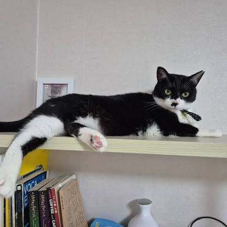
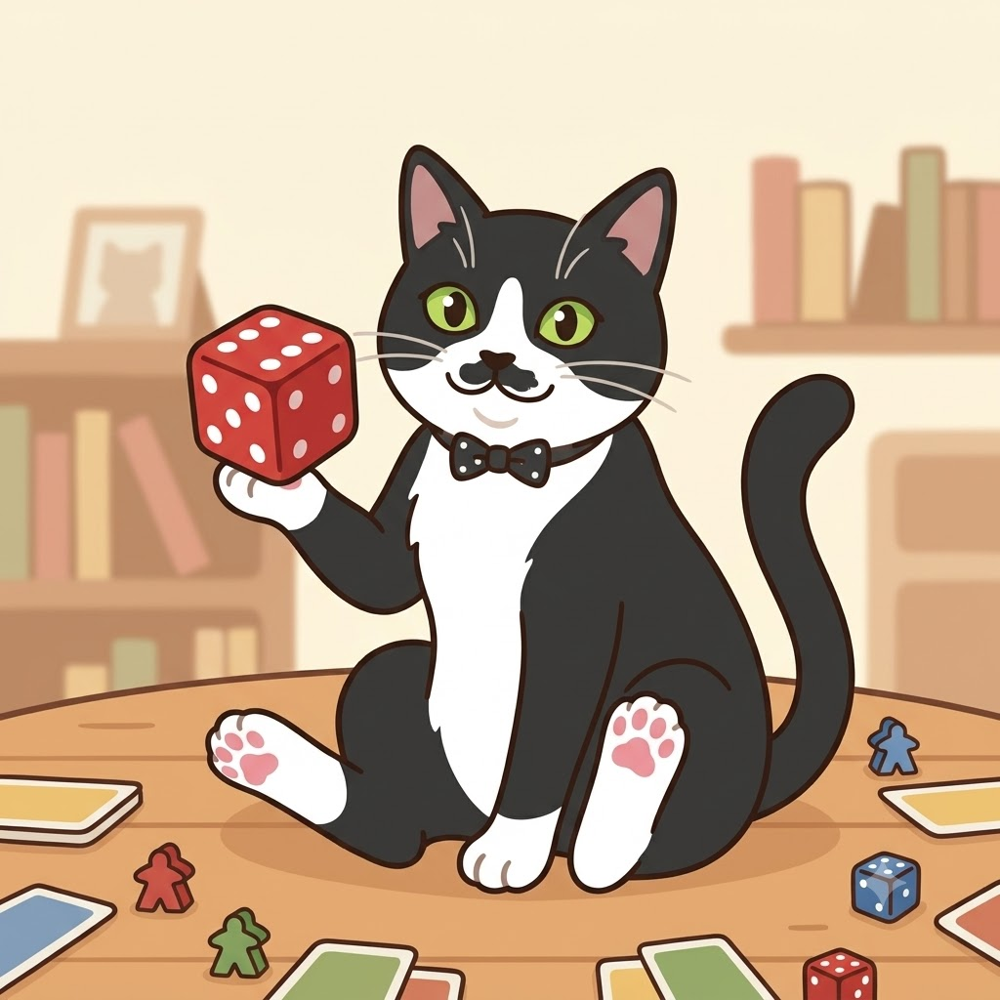

별명은 염소 🐐
IT 인프라 엔지니어 출신으로, 지금은 AI / AX 엔지니어로 커리어를 전환 중입니다.
Unix/Linux 서버 운영, 서버 보안, 대규모 모니터링, PostgreSQL, HA 클러스터링 등
인프라 현장에서 쌓은 경험을 바탕으로, AI를 활용한 운영 자동화와 장애 대응 시스템을 만들고 있습니다.
궁금한 점이 있다면 언제든 문의주세요!
보드게임 덕후
아날로그 세계로 초대합니다
뉴비는 언제나 환영합니다!

인프라 엔지니어링 경험과 AI 기술을 결합해
운영 자동화 및 장애 대응 시스템을 설계하는 AI 시스템 엔지니어로 성장하는 것이 목표입니다.
현재는 Ollama · Chroma · Prometheus/Grafana를 활용한
RAG 기반 장애 진단 어시스턴트를 사이드 프로젝트로 준비하며,
Kubernetes, Go, OpenTelemetry 등 관련 역량도 함께 채워가고 있습니다.